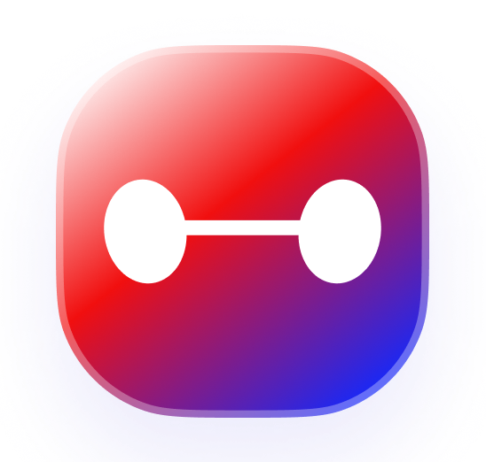
Bangladesh's first integrated AI learning ecosystemBuilt for students who need help before, during, and after lessons.
TenTen: Integrated AI Learning Ecosystem
TenTen is 10 Minute School's AI study partner across chat, app home, live classes, recorded lessons, exams, and quizzes. Behind the product is an intelligence layer: retrieval, semantic search, memory, agent workflows, evaluation, and product analytics working together so students can get useful help in the moment they need it.
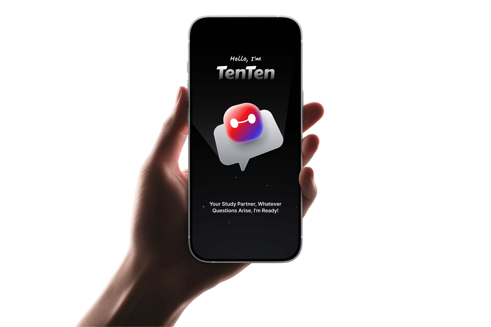

Bangladesh's first integrated AI learning ecosystemBuilt for students who need help before, during, and after lessons.
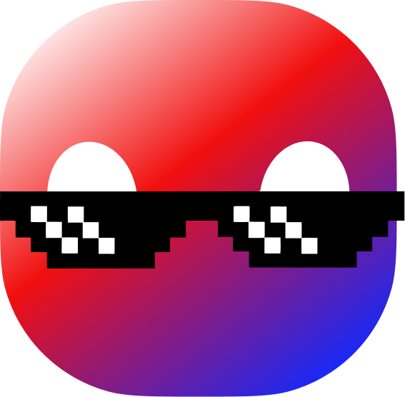
RAG, memory, routing, and evalsA practical intelligence layer around trusted content and measurable quality.
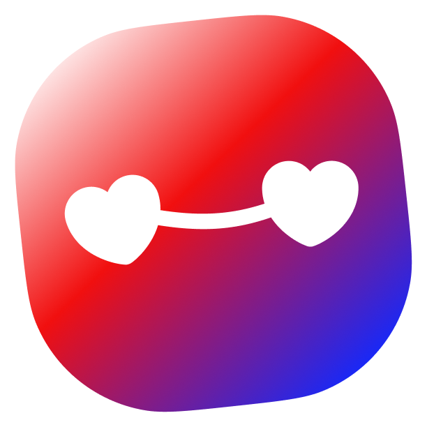
$1.5M+ awardedSupport from OpenAI, Anthropic, and Microsoft Azure helped push the initiative forward.
System path
The hard part is making the answer grounded, contextual, and measurable. TenTen needs to understand the question, retrieve the right learning material, route it through the right workflow, and keep improving after launch.
Normalize the student's request into intent, subject, class context, language, and product state before deciding what kind of help is needed.
Use semantic search over a curated knowledge base so the system can find relevant learning material even when the student's wording is imperfect.
Bring back text explanations, images, and simulation references, then use RAG to compose an answer from trusted educational material.
Track response quality over time through evaluation loops, analytics, and feedback so improvements are visible, not vibes-based.
Why it matters
A student may not ask like a documentation page. They may send half a sentence, mix Bangla and English, attach a photo of a notebook, ask from inside a live class, or return later after forgetting the previous explanation.
That is the real product challenge. TenTen has to turn messy learning moments into structured context before any answer can be useful.
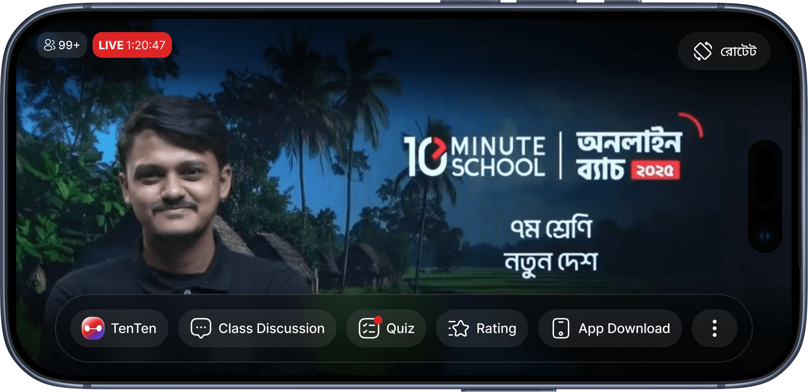
Product surfaces
TenTen is not only a standalone chat window. The same intelligence needs to work inside the app home feed, live class discussions, recorded video lessons, exams, quizzes, and follow-up study flows.
Each surface changes the job. A live class assistant needs speed and context. A recorded class assistant needs timestamps and lesson state. A quiz assistant needs guardrails. A general chatbot needs memory and source-aware reasoning.
Retrieval context
Some doubts arrive as a photo of handwritten notes. Some need a diagram. Some are better answered by pointing the student toward a simulation. This is why TenTen's retrieval layer cannot be limited to plain text.
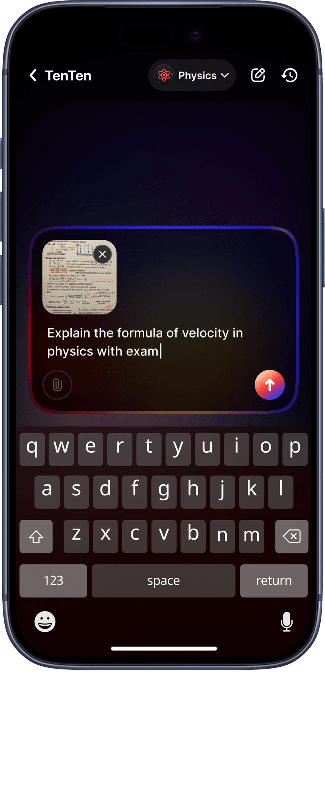
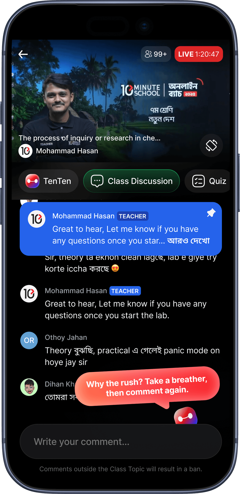
Agent routing
Live class support is a different problem from a general chatbot. The assistant has to read the class moment, understand the discussion, avoid interrupting the learning flow, and respond with the right level of confidence.
That is where the internal agent system matters. TenTen uses specialized workflows for different contexts instead of forcing every request through one generic path.
Intelligence layer
Students do not care whether the backend is elegant. They care whether TenTen understands enough context, remembers what matters, finds the right material, and helps them move forward.
The system needs short-term memory for the current conversation, long-term memory for repeated learning patterns, and evaluations that show whether the assistant is actually getting better.
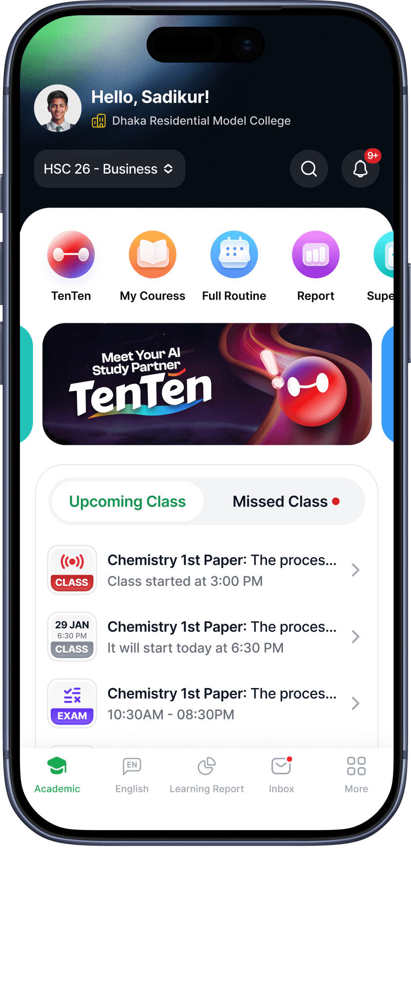
Platform support
The product goal stays simple: make high-quality learning help more available to Bangladeshi students. The system underneath uses modern AI infrastructure, retrieval patterns, and evaluation discipline to make that possible.
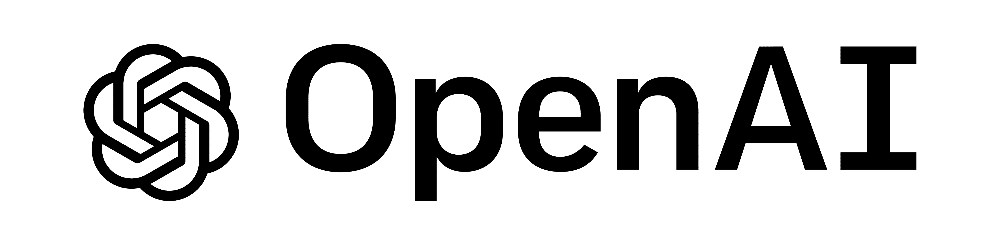
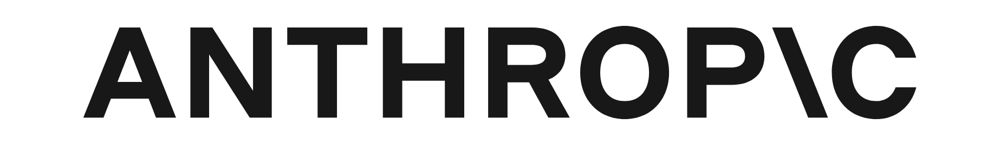
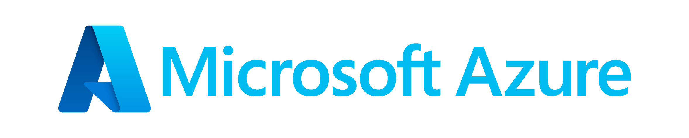
My role
My work on TenTen sits in the intelligence layer behind the interface: RAG-based retrieval, semantic search behavior, agentic workflows, technical architecture, product analytics, evaluation systems, and the practical loops that keep the product improving.
This page focuses on the product and engineering layer part where I fit in: the parts that make the experience searchable, contextual, measurable, and useful after launch.
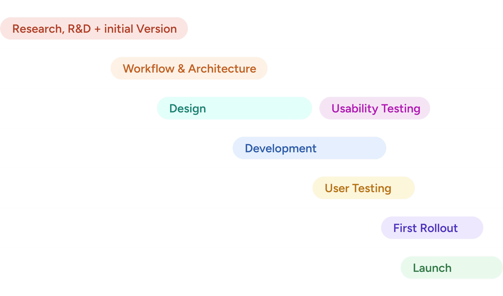
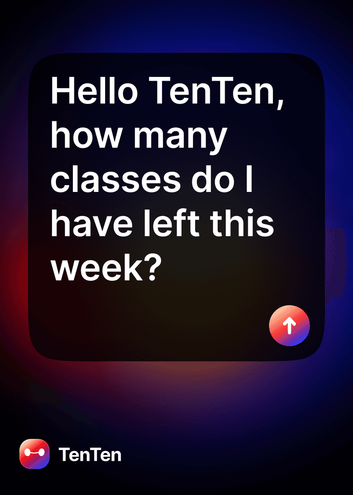
Visual record
The prompt is simple. The system behind it has to know where the student is, what kind of help they are asking for, which source can be trusted, and whether the answer was useful enough to improve the next interaction.
Impact
The signal mattered because it came from paying students choosing TenTen inside their learning flow, not from a broad free-user spike.
Half of paid learners used TenTen through the rollout, a strong sign that the assistant fit into the study journey.
A steady daily base used TenTen to resolve doubts and continue learning.
NPS landed at +42, showing that students were willing to recommend the experience.
Commercial signal
The cleaner read: these signals came from paying learners who got access to TenTen in 2026 after a limited beta in late 2025.